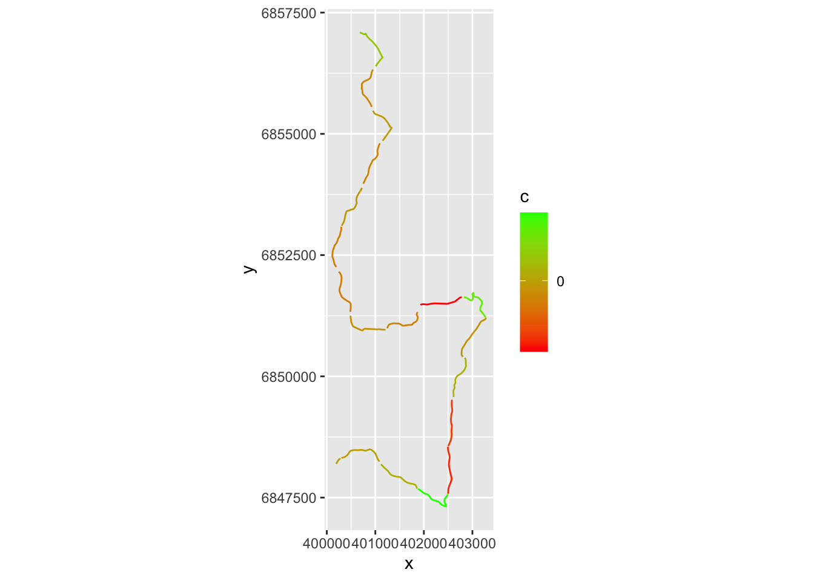

9 Estimating Time Deltas Between Drivers Over Small Sections
We can now generate a list of delta values describing the time difference between the drivers in completing each section.
Note that if the telemetry samples are widely separated, this estimates might be quite poor, particularly if they are based on linear interpolation of times between points.
dummy_split_deltas = evans_1km_segments - fourmaux_1km_segments
head(dummy_split_deltas, 3)## [1] 2.2213305 -1.2957991 -0.1980497If we cast the original route to a trajr directory, we can easily split the route into separate sections based on the cumulative distance of steps along the route.
library(trajr)
trj <- TrajFromCoords(as.data.frame(st_coordinates(stage_route_utm)))
trj$distance = Mod(trj$displacement)
# Note that the trj object natively also provides a displacement time
trj$cum_dist = cumsum(trj$distance)We can then plot the route with the time delta highlighted:
g = ggplot()+ coord_fixed()
# Create a trace for each segment
for (i in 1:length(segments)){
start=(i-1)*segment_length
end= start+segment_length
# Filter out the part of the trajectory we want to plot
segment_filter = trj$cum_dist >= start & trj$cum_dist <= end
route_segment = trj[segment_filter,]
# Set colour based on delta
c= dummy_split_deltas[i]
if (is.na(c)) c=0
route_segment$c = c
# Add segment to plot
g = g+geom_path(data=route_segment, aes(x=x, y=y, color=c))
}
# Render plot
g+scale_colour_gradient( low = "red", high = "green", breaks=c(0))  # TO DO
TO DO - can we split on the route using split points a distance along the route?
# not required?
getlocation = function(route_utm, dist, units='m') {
sample_point_sp_utm = rgeos::gInterpolate(as(route_utm, "Spatial"),
dist, # Distance along route in meters
normalized = FALSE)
# We can convert back from an sp to an sf object:
sample_point_sf_utm = st_as_sf(sample_point_sp_utm)
# And also convert back to a latlong reference system
sample_point_sf = sample_point_sf_utm %>% st_transform(crs = st_crs(latlon_crs))
sample_point_sf
}
getlocation(stage_route_utm, c(1500, 2000))## Simple feature collection with 2 features and 0 fields
## geometry type: POINT
## dimension: XY
## bbox: xmin: 25.11525 ymin: 61.81992 xmax: 25.11939 ymax: 61.82377
## geographic CRS: WGS 84
## geometry
## 1 POINT (25.11525 61.82377)
## 2 POINT (25.11939 61.81992)# Not required?
df_dummy_split_points = getlocation(stage_route_utm, segments)
df_dummy_split_coords = df_dummy_split_points %>%
st_coordinates() %>%
as.data.frame() %>%
rename(lon=X, lat=Y)
df_dummy_split_coords$delta = dummy_split_deltas
head(df_dummy_split_coords, 3)## lon lat delta
## 1 25.11383 61.83364 2.2213305
## 2 25.12013 61.82727 -1.2957991
## 3 25.11939 61.81992 -0.1980497We can also split the co-ordinates out from the geometry using a recipe such as:
#https://stackoverflow.com/questions/54734771/sf-write-lat-long-from-geometry-into-separate-column-and-keep-id-column
#df %>%
# mutate(lat = unlist(map(geometry,1)),
# long = unlist(map(geometry,2)))